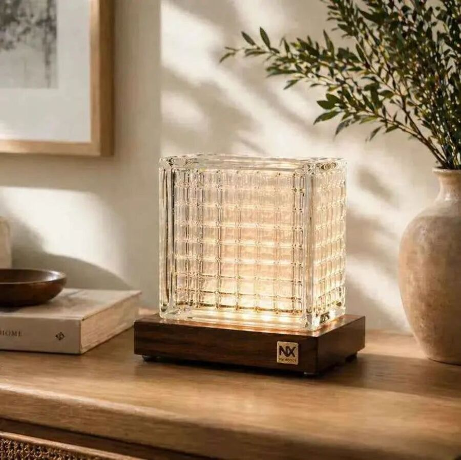
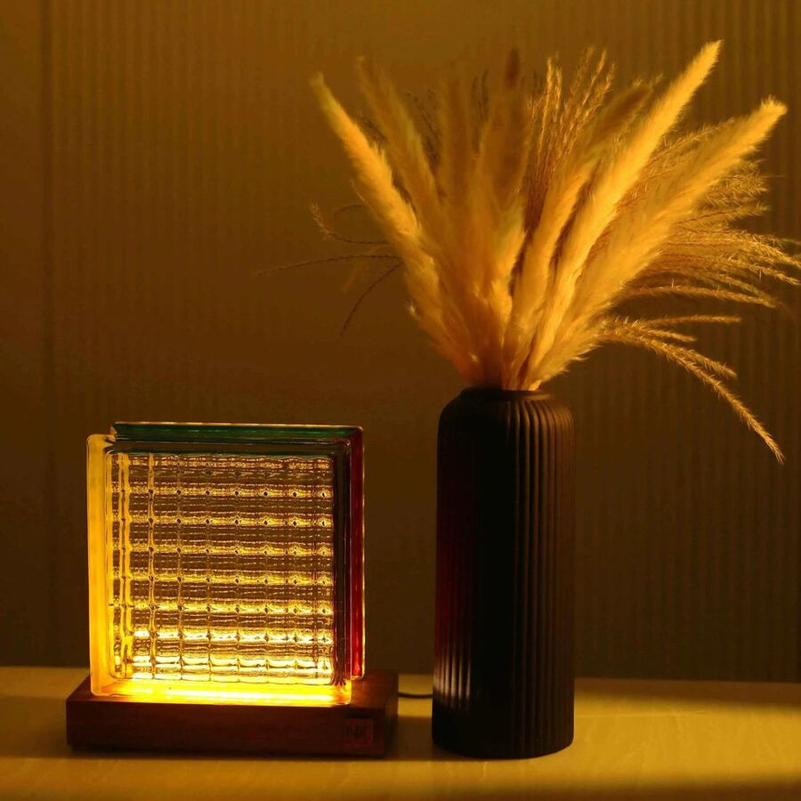
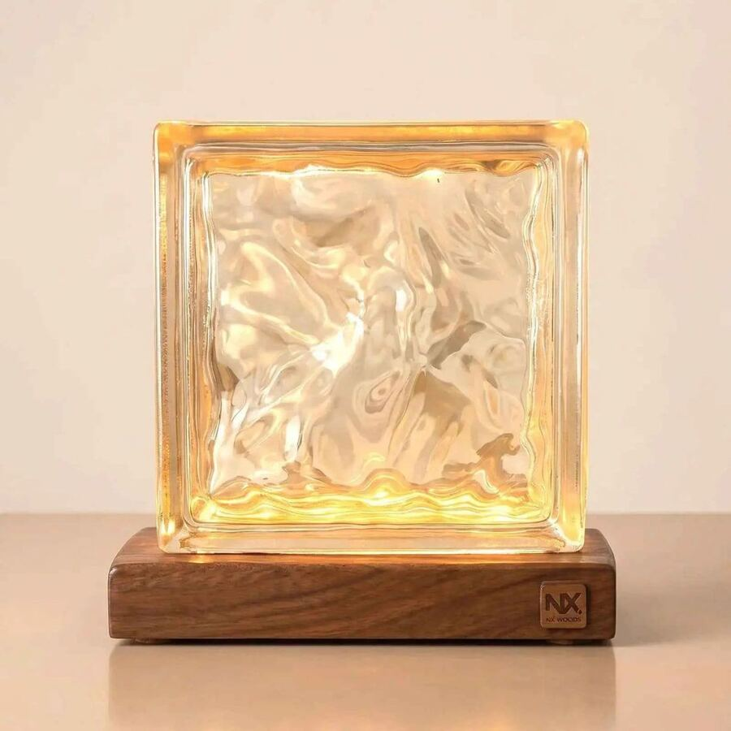
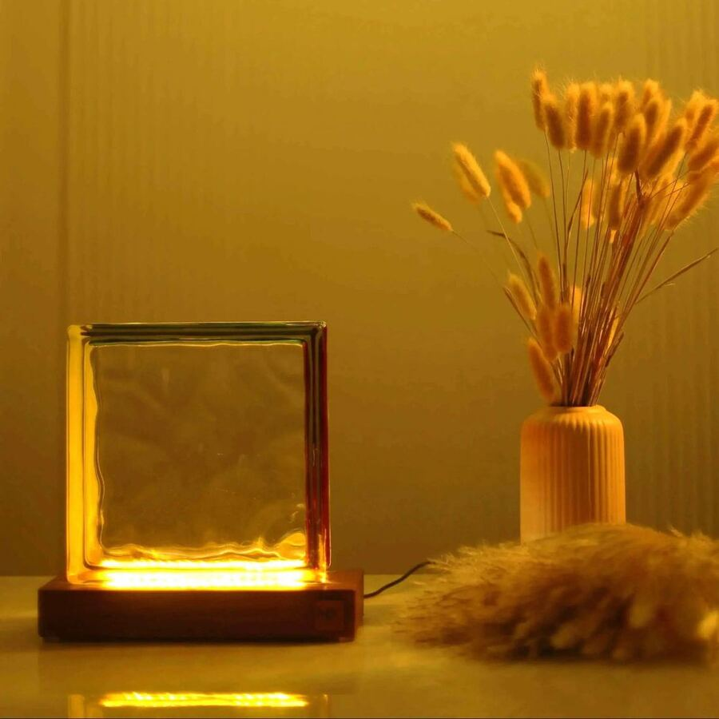
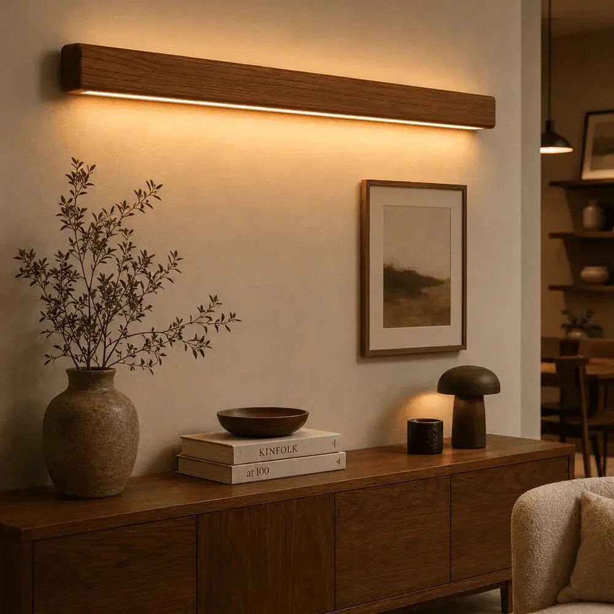
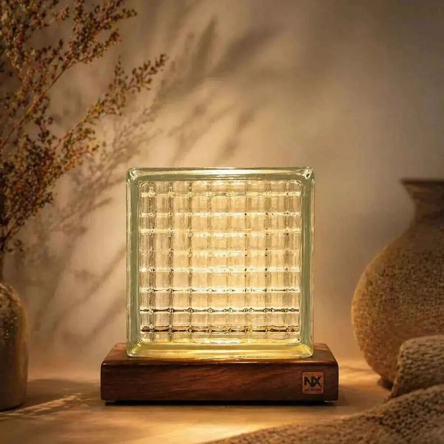

Proposed motion spec, for review
Five moments, and nothing else. Each one is below, live, with its timing and the code that makes it. Press replay as often as you like. If these feel right, this becomes the motion section of the brand file and every page uses the same five.


The one big moment a page gets. The piece is seen off, then the light comes up the way a real LED driver settles: dark amber first, then warm white. Used once per page, on the hero or the first product image, when it scrolls into view.
gsap.timeline({ scrollTrigger: { trigger: el, start: "top 75%", once: true } }) .to(onImg, { opacity: 1, duration: 0.9, ease: "power2.out" }, 0.45) .fromTo(onImg, { filter: "brightness(.55) saturate(1.4)" }, { filter: "brightness(1) saturate(1)", duration: 0.9, ease: "power2.out" }, 0.45);


Choosing a finish, a length or a direction swaps the gallery with a short crossfade. No slide, no zoom. Fast enough to feel like the chip did it, slow enough that the eye follows.
gsap.to(nextImg, { opacity: 1, duration: 0.24, ease: "power1.out", onComplete: () => { currentImg.src = nextImg.src; gsap.set(nextImg, { opacity: 0 }); } });

As you scroll, a section's content rises 8 px and fades in, once. It reads as a fade, not a slide. Cards stagger by 60 ms so a row feels placed, not dropped. Everything is visible without scrolling if scripts fail.
gsap.from(section.children, { opacity: 0, y: 8, duration: 0.35, stagger: 0.06, ease: "power1.out", scrollTrigger: { trigger: section, start: "top 88%", once: true } });

Every product card carries the piece off and on. Hover on a desktop, or tap on a phone, and the light comes up. The card itself does not lift, tilt or grow. The product moves; the chrome stays still.
card.addEventListener("pointerenter", () => gsap.to(onImg, { opacity: 1, duration: 0.24, ease: "power1.out" })); card.addEventListener("pointerleave", () => gsap.to(onImg, { opacity: 0, duration: 0.32, ease: "power1.out" }));
Scroll this button off the screen and the bar below appears. Scroll back and it leaves.
The sticky buy bar slides up once the real button has scrolled away, and slides back down when it returns. An answer in the FAQ opens by growing, not by popping. Both are state changes made visible, and both are done in under a quarter of a second.
// sticky bar new IntersectionObserver(([e]) => gsap.to(bar, { yPercent: e.isIntersecting ? 110 : 0, duration: 0.24, ease: "power2.out" })).observe(buyButton); // accordion gsap.from(answer, { height: 0, opacity: 0, duration: 0.24, ease: "power2.out", clearProps: "height" });
These are common on other stores and in the reel you sent. Each one moves while someone is trying to read or decide, or makes the page feel like it is selling harder than the product needs.